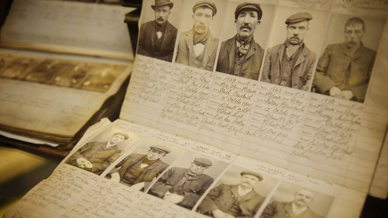

Peaky Blinders é uma série de televisão britânica de drama criada por Steven Knight. Situado em Birmingham, na Inglaterra, segue as façanhas da gangue criminosa Peaky Blinders logo após a Primeira Guerra Mundial. A gangue fictícia é vagamente baseada em uma gangue de jovens urbanas reais de mesmo nome que esteve ativa na cidade de 1890 a 1910.
Os Peaky Blinders são uma organização criminosa de origem cigana que se passa na cidade de Birmingham, Inglaterra, em 1919, formada vários meses após o final da Primeira Guerra Mundial (1914–1918). A história é centrada na ambição do líder da gangue inglesa, Thomas "Tommy" Shelby (Cillian Murphy). A gangue chama a atenção do major irlandês, Chester Campbell (Sam Neill), um inspetor-chefe de polícia do Royal Irish Constabulary (RIC) de Belfast, Irlanda do Norte, enviado por Winston Churchill, sendo contratado para limpar a cidade do Exército Republicano Irlandês (IRA) (1919–1922), comunistas, gangues e criminosos comuns. Churchill ordenou Campbell eliminar as desordens e rebeliões em Birmingham, visando recuperar um esconderijo roubado de armas que deveria ser enviado para a Líbia Italiana (1934–1943).
A série foi exibida em primeira mão na BBC Two no dia 12 de setembro de 2013, estreando a sua primeira temporada. Atualmente conta com 5 temporadas, tendo a estreia da sexta marcada para o dia 10 de junho de 2022 na Netflix. Em janeiro de 2021 foi anunciado que a temporada a ser lançada seria a última da série.
Os Peaky Blinders existiram na Vida Real!
Sim, eles existiram, mas de maneira diferente a que conhecemos hoje através da sérieblablablablablablablablablablablablablablablablablablablablablablablablablablablablablablablablablablablablablablablablabl ablablablablablablablablaablablablablablablablablablablablablablablablablablablablablablablablablablablablablabla blablaablablablablablablablabla blablablablablablablablablablablablablablablablablablablablablablablaablablablabla blablablablablablablablablablablablablablablablablablablablablablablablablablablakkkkkkkkkkkkkkkkkkkkkkkkkkkkkkkkkkkkkkk 🤣😂🤣😂🤣😂🤣😂🤣😂🤣😂🤣😂🤣😂🤣😂🤣😂🤣😂🤣😂🤣😂🤣😂🤣😂🤣😂🤣😂🤣😂🤣😂🤣😂🤣😂🤣😂🤣😂🤣😂🤣😂🤣😂🤣😂🤣😂🤣😂🤣😂🤣😂🤣😂
Dados da série:
• Episódios: 36.
• Origem: Reino Unido.
• Atual diretor: Anthony Byrne.
• Duração por episódio: 55-65 minutos.
